01 Introducción
En esta entrada recorreremos un proceso completo de puesta en producción segura y auditoría técnica de una infraestructura corporativa Windows Server, el proceso consistirá en desplegar la infraestructura, aplicar su bastionado, auditar la configuración y las vulnerabilidades, remediar los hallazgos encontrados y, por último, volver a medir para demostrar las mejoras con datos reales.
Cabe remarcar que esta es la entrada más larga y compleja del blog, por lo que, si vienes de procesos más acotados, recomiendo comenzar por "Análisis y triaje de alertas críticas en Windows Server AD" y "Análisis de tráfico malicioso en red corporativa", los cuales están más cerrados. En caso de tenerlas ya claras, podemos continuar.
En esta entrada cubriremos dos apartados, por un lado una Security Baseline (puesta en producción segura) y, por otro, una auditoría técnica de configuración y vulnerabilidades con su plan de remediación y la validación de antes y después.
La explotación activa (pentest) queda fuera, ya que la dejamos como alcance futuro. Cabe remarcar que se trata de un entorno simulado, por lo que NIST SP 800-115, CIS Benchmarks, ENS e ISO 27001 se emplean como marcos de referencia y no como una certificación.
02 Tipos de auditoría
Dependiendo del objetivo y el alcance, una auditoría puede tomar una forma u otra, principalmente, podemos distinguir tres tipos:
Security Audit — Auditoría de seguridad
Este tipo de auditoría verifica que un sistema cumple una normativa o un estándar, es decir, no explota nada, unicamente comprueba si se están siguiendo las reglas establecidas, por lo que el resultado que obtenemos es un dictamen de cumplimiento.
Vulnerability Assessment — Evaluación de vulnerabilidades
En este caso identificamos y catalogamos todas las debilidades empleando herramientas de escaneo, tampoco se explota nada, unicamente se detecta y se prioriza, es decir, respondemos a la pregunta de qué fallos hay y cómo de graves son.
Penetration Test — Prueba de intrusión
En esta ocasión se simula un atacante real y se explotan las vulnerabilidades para confirmar el impacto, por lo que el pentest confirma en lugar de unicamente sugerir.
03 Herramientas empleadas
En una auditoría real, las herramientas que empleamos deben ser reconocidas y estar verificadas, ya que sus resultados son los que respaldan un informe con validez técnica.
| Herramienta | Tipo | Rol |
|---|---|---|
| Nessus (Tenable) | Comercial | Escaneo de vulnerabilidades y CVEs por máquina |
| PingCastle | Open source | Risk scoring del dominio AD |
| Purple Knight | Gratuita (Semperis) | Indicadores de exposición de AD |
| BloodHound + SharpHound | Open source | Rutas de ataque y relaciones del directorio |
| Nmap | Open source | Reconocimiento de puertos y servicios |
| Wazuh | Open source | SIEM/XDR: monitorización y validación |
Cabe remarcar que el hecho de que un software sea open source y esté alojado en GitHub no lo valida por si solo. La regla que empleo es sencilla, debemos atender a que tenga una comunidad activa, un mantenimiento reciente y presencia en los repositorios oficiales de las distribuciones de seguridad. Un criterio bastante directo es recurrir a kali.org/tools, ya que está curado por Offensive Security.
04 Marcos normativos
Una auditoría sin un marco detrás no es una auditoría, unicamente es un escaneo, ya que el marco es lo que define qué debemos comprobar, cómo hacerlo y con qué validez.
| Marco | Para qué |
|---|---|
| NIST SP 800-115 | Metodología técnica: planificación, descubrimiento, ejecución y post-ejecución. El "cómo". |
| ENS — RD 311/2022 | Marco legal español de referencia (categoría Media). Aquí es referencia, no certificación. |
| CIS Benchmarks | Configuración segura concreta de Windows Server 2022, Windows y SQL Server. |
| ISO/IEC 27001 | Referencia para la gestión del riesgo y la estructura del informe. |
Si que podemos afirmar que está "basado en" o "alineado con". Sin embargo, no podemos afirmar que esté "certificado ENS" ni que sea una "auditoría oficial ENS", ya que esa certificación la emite un organismo acreditado y, en este caso, se trata de un entorno simulado.
05 Escenario e infraestructura
Todo el entorno está montado en VirtualBox sobre un pfSense con tres redes internas segmentadas, simulando una pyme de unos 20 usuarios con dos servidores. El dominio que emplearemos es AOM-AUDITORIA.lab.
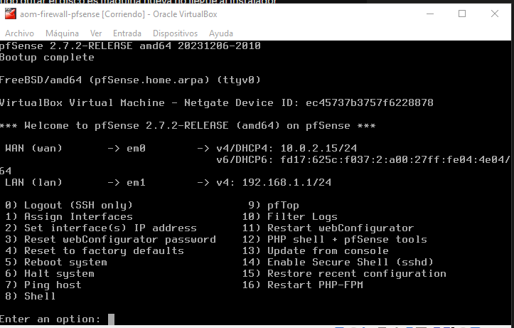
El pfSense es la primera máquina que montaremos en este laboratorio, ya que sin él, al encontrarse cada segmento en una red distinta, las máquinas no podrían comunicarse entre ellas.
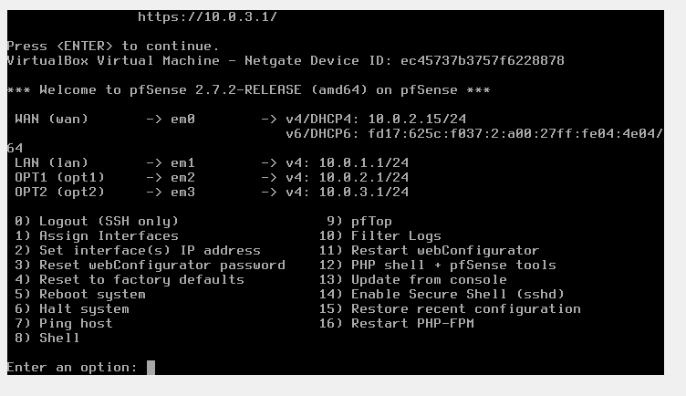
Le asignaremos cuatro interfaces, la WAN y las tres LAN segmentadas, en caso de ser necesario, puedes ver este tutorial de pfsense para asignar las interfaces corrrectamente (tutorial).
pfSense 2.7.2
WAN + 3 LAN
Segmentación por zonas
Logs → Wazuh
DC01 — Win Server 2022
10.10.1.10
AD DS · DNS · DHCP
Agente Wazuh
DC02 — Win Server 2022
10.10.1.20
AD DS (réplica) · SQL Server 2022
3 BBDD de negocio
PC-VENTAS / RRHH / ALMACEN
10.10.2.3 / .6 / .9
Windows 10 Pro · unidos al dominio
Agente Wazuh
PC-ADMIN
10.10.3.2
Windows 10 Pro
Desde aquí se audita
Wazuh 4.14.2
10.10.3.10
SIEM + XDR
6 agentes activos
Active Directory y datos de negocio
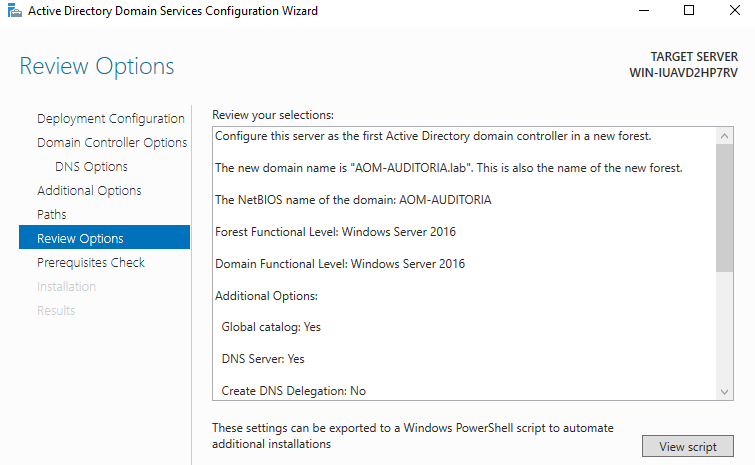
Para comenzar con DC01, lo promocionaremos como controlador principal del bosque AOM-AUDITORIA.lab, con DNS y DHCP, Si pretendes recrear el lab, puedes asginarle el dominio que quieras, aunque te recomiendo que DC1 sea el AD principal.
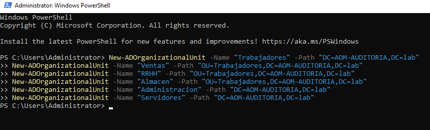
Ordenaremos el dominio en OUs según su función, Trabajadores (Ventas, RRHH y Almacén), Administración y Servidores.
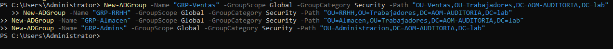
A continuación crearemos los grupos de seguridad por departamento, GRP-Ventas, GRP-RRHH, GRP-Almacen y GRP-Admins.
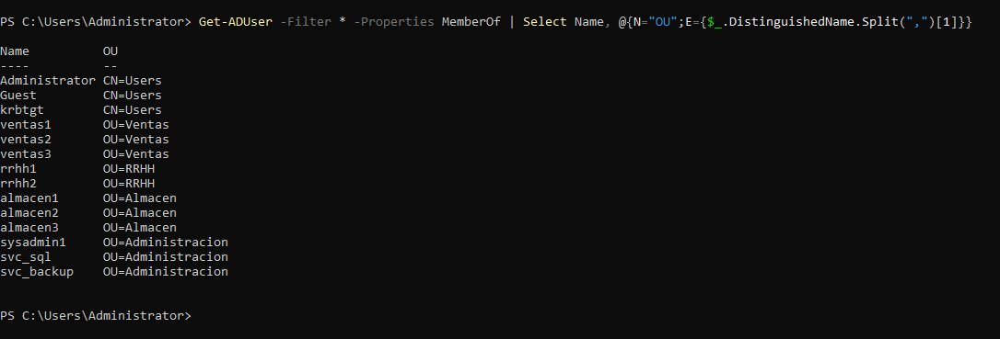
Daremos de alta los usuarios por departamento, además de dos cuentas de servicio, svc_sql y svc_backup, las cuales serán las protagonistas de los hallazgos.
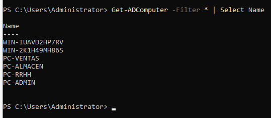
Después uniremos cada equipo al dominio.
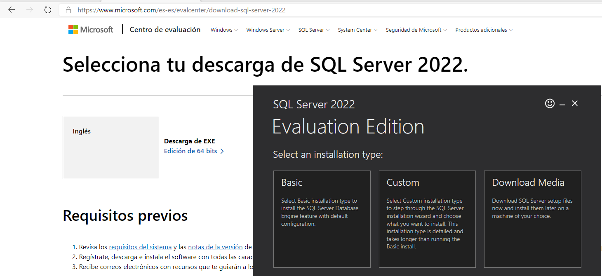
En DC02 instalaremos SQL Server 2022, el cual, contrenda los datos importantes de nuestra empresa.
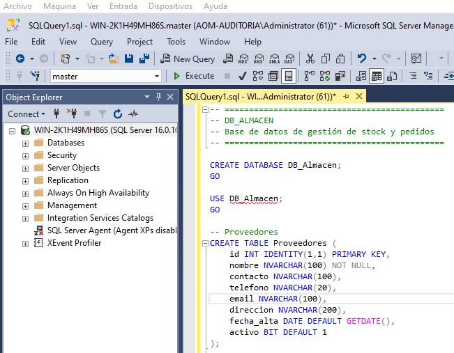
Crearemos tres bases de datos de negocio, DB_Ventas, DB_RRHH y DB_Almacen, con datos de ejemplo (clientes, nóminas, empleados, proveedores), y cada grupo accede unicamente a la suya.
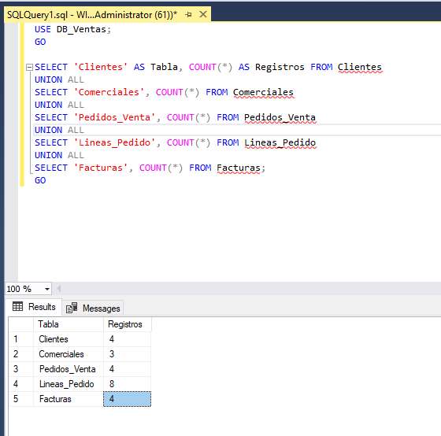
Comprobaremos que las consultas a las bases de datos responden correctamente.
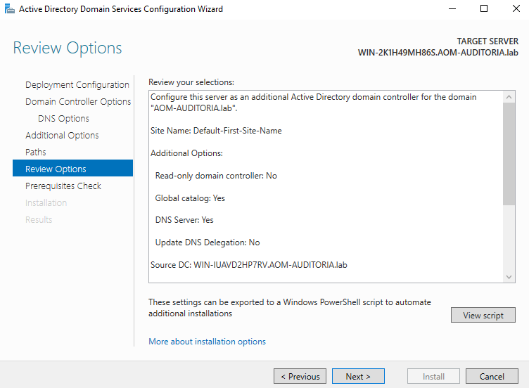
Por último, añadiremos dc 2 al dominio, en mi caso, lo añadire como replicacion del primer dominio, aunque tambrien podria ser dominio secundario.
Reglas de firewall(pfsese) — mínimo acceso
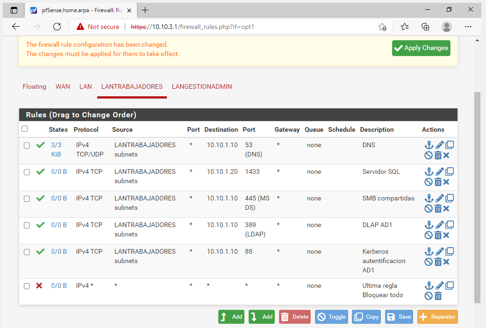
La red de trabajadores unicamente llega a lo que necesita, y el resto se bloquea mediante una regla final de denegación.
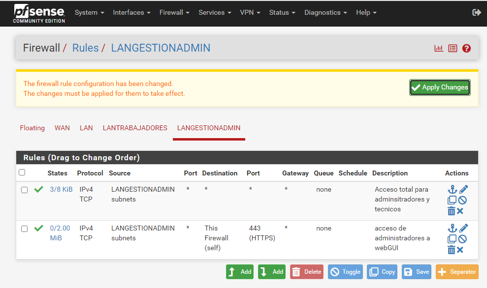
Emplearemos el mismo criterio de mínimo acceso en la LAN de administración, es decir, aplicamos zero trust en cada segmento.
| Origen | Servicio | Destino |
|---|---|---|
| LAN-TRABAJADORES | Kerberos 88 · LDAP 389 · SMB 445 · DNS 53 | DC01 (10.10.1.10) |
| LAN-TRABAJADORES | SQL 1433 | DC02 (10.10.1.20) |
| LAN-TRABAJADORES | Agente Wazuh 1514-1516 | Wazuh (10.10.3.10) |
| LAN-TRABAJADORES | Bloquear todo lo demás | any |
| LAN-GESTION-ADM | Administración + WebGUI 443 | any / pfSense |
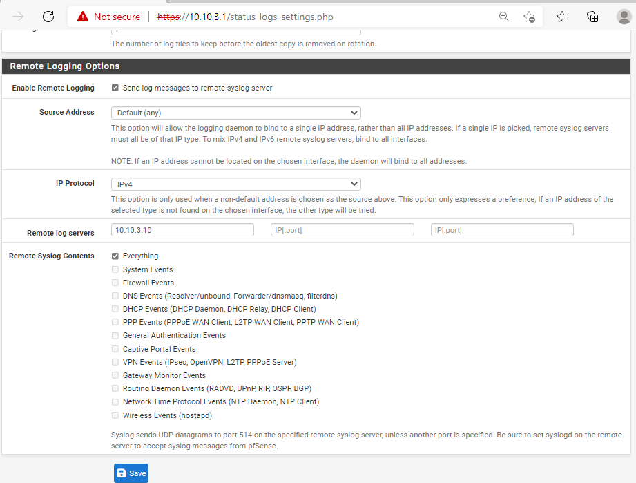
El pfSense enviará sus logs a Wazuh, de esta manera, el SIEM tiene visibilidad en capa de red.
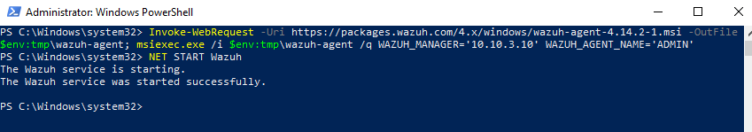
Desplegaremos los seis agentes, los dos DC, las tres estaciones y la de administración.
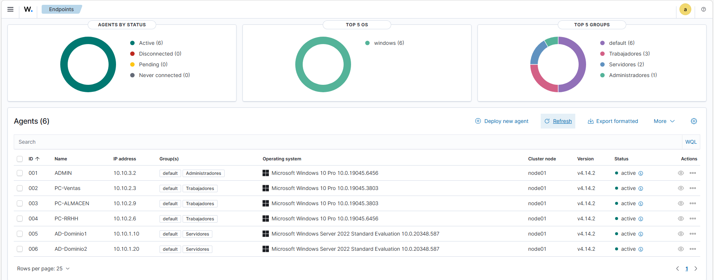
Comprobaremos en el panel de agentes de wazuh que los seis equipos están reportando correctamente.
06 Security Baseline — puesta en producción segura
Antes de comenzar a auditar, aplicaremos la línea base de seguridad(Security Bassline), es decir, las medidas imprescindibles para poder entrar en producción. El orden que seguiremos es el siguiente, DC01, después DC02 con SQL, las estaciones, PC-ADMIN, pfSense y, por último, Wazuh.
DC01 — política de dominio y GPOs base
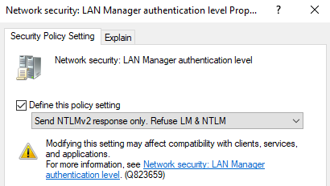
Mediante GPO aplicaremos la política de contraseñas fuerte y las directivas de seguridad del dominio.
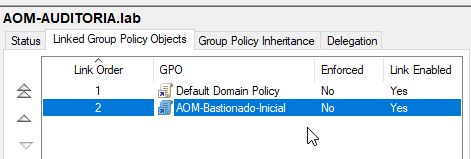
Entre estas medidas, deshabilitaremos SMBv1, forzaremos NTLMv2 (sin LM), deshabilitaremos LLMNR, exigiremos firma SMB y cortaremos la enumeración anónima de SAM.
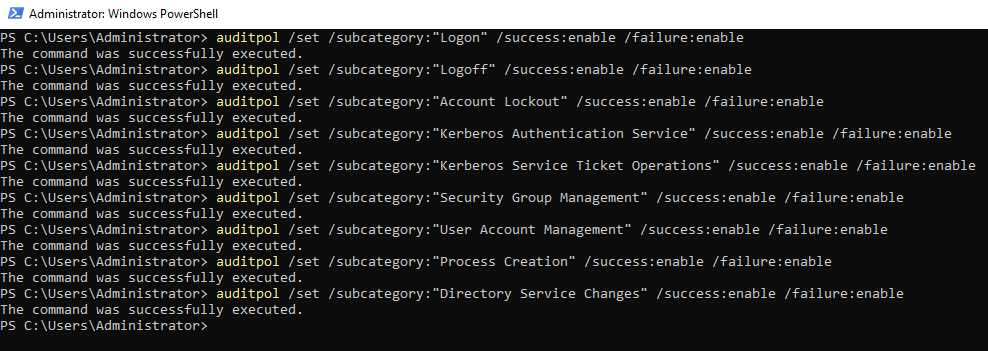
Activaremos la auditoría avanzada (Event ID 4624, 4768, 4769…) para registrar los logons y las peticiones Kerberos, ya que nos da visibilidad de un futuro Kerberoasting o de un ataque de fuerza bruta.
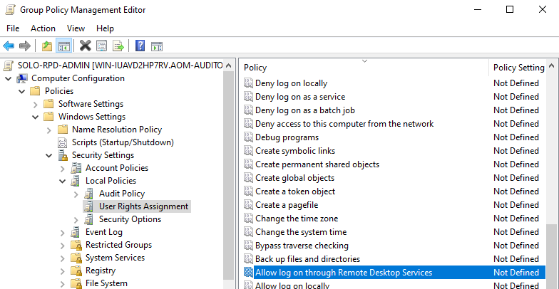
Emplearemos una GPO específica para administradores, la cual endurece la estación de gestión.
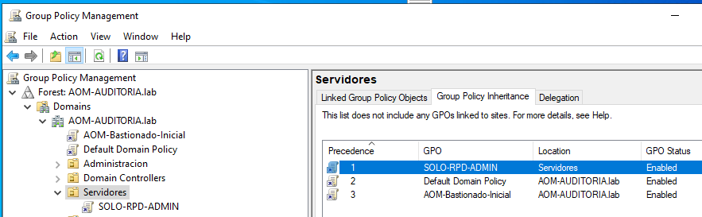
Esta restringe el RDP unicamente a administradores, de esta manera limitamos el movimiento lateral por escritorio remoto.
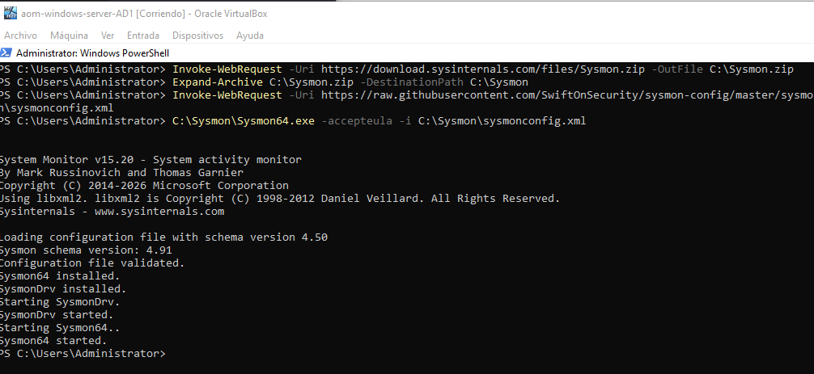
Desplegaremos Sysmon con su configuración base en los servidores, ya que aporta a Wazuh una telemetría mucho más "profunda" o valiosa de procesos y conexiones,merece muchisimo la pena integrar Sysmon,no debemos ignorarlo.
Estaciones de trabajo
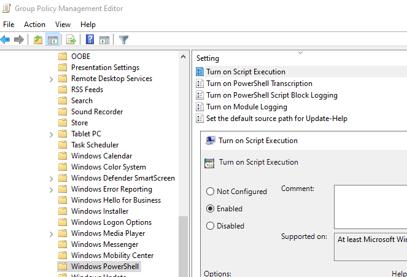
A los puestos, por OU, les aplicaremos GPOs de restricción, de esta manera los usuarios "denivel bajo" digamos, no tendrán acceso al CMD ni al Panel de control.
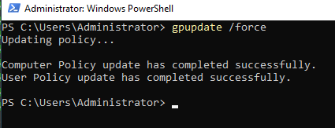
Para la aplicación de las GPOs al momento, emplearemos gpoupdate /force.
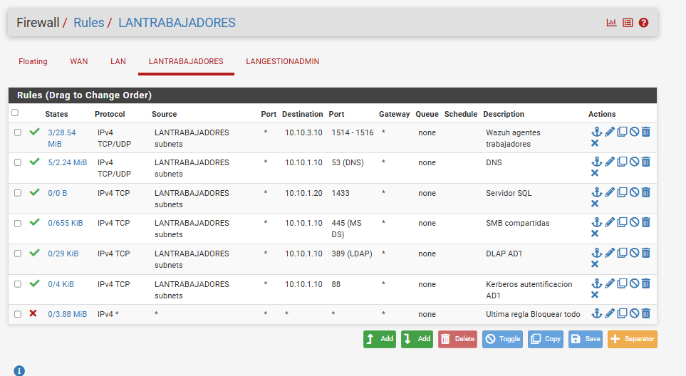
Revisaremos y completaremos las reglas del pfSense, dejando la segmentación cerrada.
Validación en Wazuh
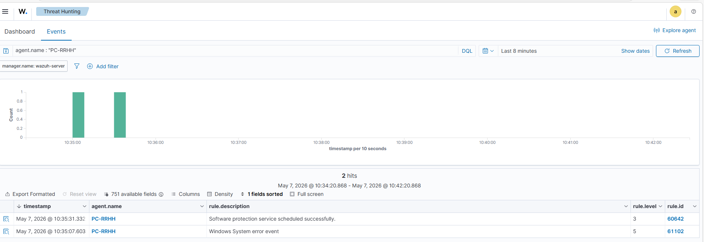
Realizaremos pruebas por grupo y comprobaremos que Wazuh las recoge correctamente.
Hay ciertas medidas que dejaremos documentadas como recomendación pero que no aplicaremos en VirtualBox, como son el LAPS completo, Credential Guard, BitLocker, AppLocker o WDAC y un modelo de tiering. En la matriz las reflejaremos como un hallazgo abierto junto a su justificación.
07 Estado inicial — análisis
Con la Security BassLine ya aplicada, tendremos que analizar el estado actual desde PC-ADMIN empleando herramientas especificas.
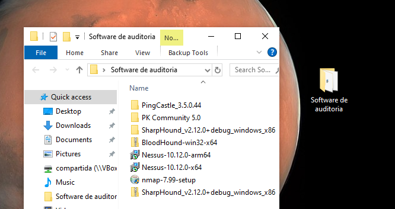
Descargaremos y prepararemos todo el arsenal de auditoría en la estación de administración (PC-ADMIN).
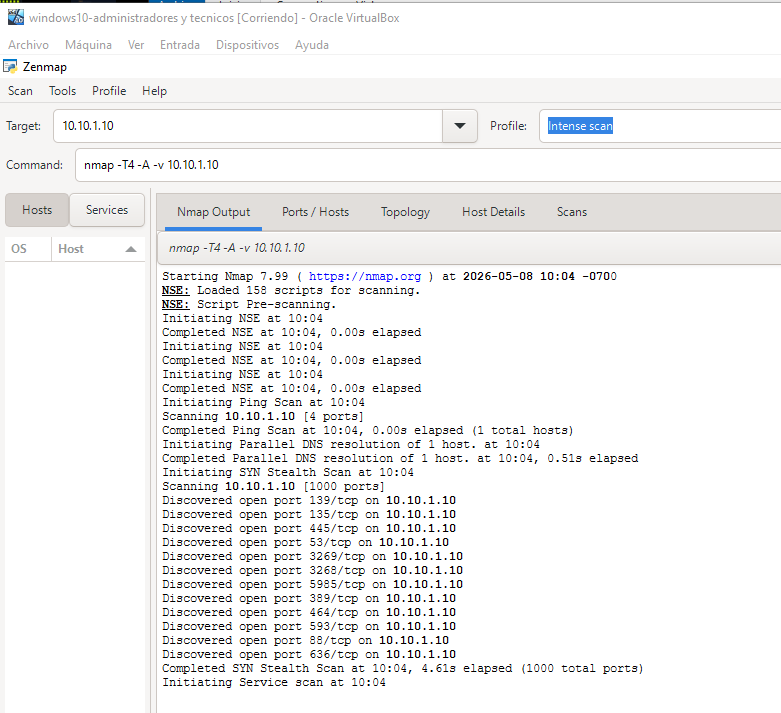
Con Nmap mapearemos qué puertos y servicios están expuestos en cada IP.
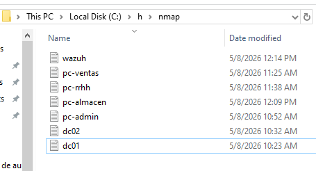
El barrido debe cubrir las tres redes.
nmap -sV -sC -O -p- --open -A <IP>
# Salida completa por host (DC01, DC02, PC-VENTAS/RRHH/ALMACEN, PC-ADMIN, Wazuh)
# en el Anexo de evidencias -> evidencias/completo/03_estado_inicial/nmap/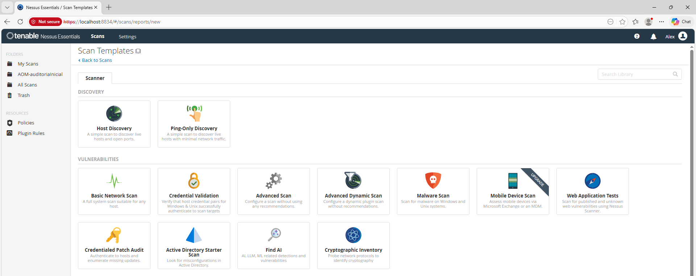
Nessus escanea cada máquina en busca de CVEs y parches que falten.
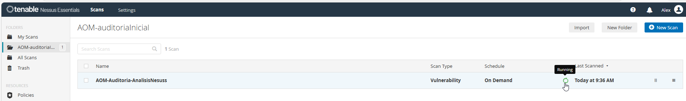
Tras el análisis, obtenemos 70 vulnerabilidades críticas y 194 altas, en su mayoría parches de sistema y de servicio sin aplicar.
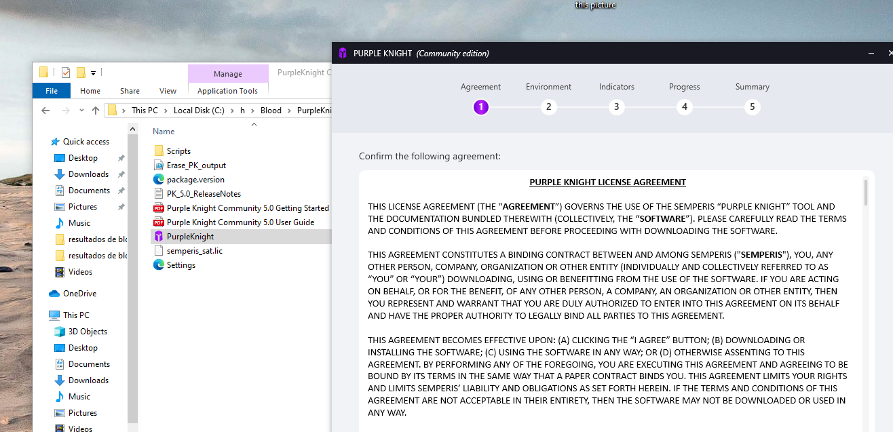
Instalaremos Purple Knight para evaluar la exposición del dominio.
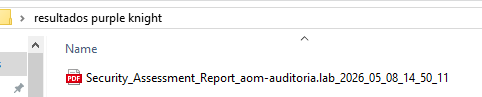
Purple Knight evalúa indicadores de exposición específicos de Active Directory, por lo que complementa a PingCastle en la parte de identidad.
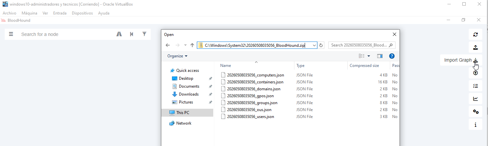
Importaremos en BloodHound los datos que hemos recogido con SharpHound.
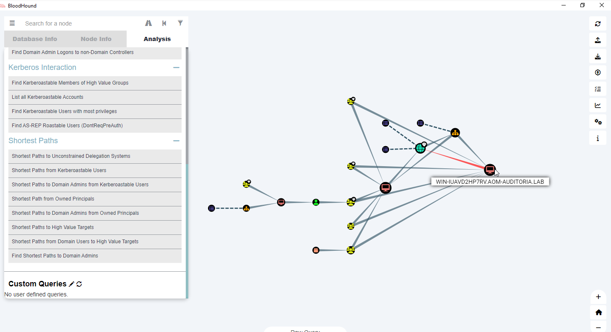
Visualizaremos las relaciones y las rutas hacia los objetivos de alto valor, ya que el panel nos ofrece directamente las consultas clave.
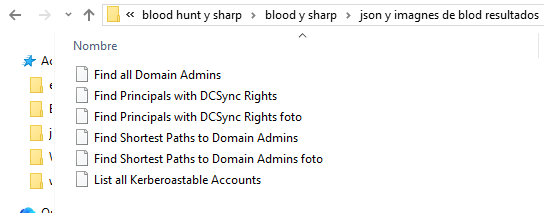
Como podemos ver, salen cuentas Kerberoastable, AS-REP Roastable y los caminos más cortos hacia Domain Admins.
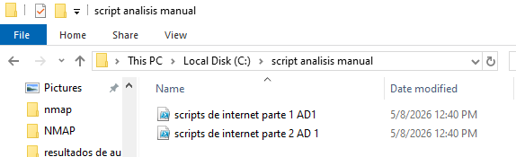
Las herramientas no capturan todo, por lo que pasaremos una revisión manual de más de 40 comprobaciones sobre AD, SQL, red y endpoints, esta es predefinida, es decir, es una plantilla.
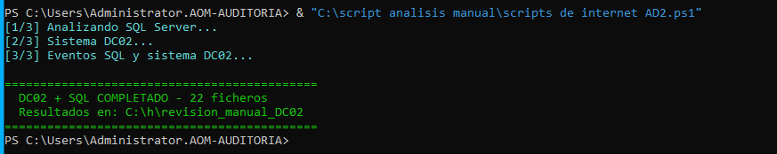
Aquí podemos ver un extracto de los hallazgos, en este caso sobre DC02.
06_kerberoastable_spn -> cuentas de servicio con SPN activo (Kerberoasting)
05_asrep_roastable -> cuentas sin preautenticacion Kerberos (AS-REP)
36_smbv1_status -> SMBv1 Status: Disabled
40_wdigest_status -> WDigest UseLogonCredential (0=seguro, 1=peligroso)
41_laps_status -> LAPS no instalado/configurado
26_sysvol_cpassword_GPP -> busqueda de contrasenas en SYSVOL
35_admin_locales -> administradores locales por equipo
gpresult /r (cada PC) -> verificacion de GPOs aplicadas08 Matriz de hallazgos
Ahora, debemos saber correlacionar los datos y convertirlos en hallazgos con impacto de negocio. Para clasificarlos, emplearemos las dimensiones del ENS, es decir, Disponibilidad, Integridad, Confidencialidad, Autenticidad y Trazabilidad (DICAT).
Ejemplo de correlación — impacto real, no dato suelto
La cuenta svc_sql tiene una contraseña que no caduca + es db_owner en las tres BBDD + esas BBDD contienen DNIs, nóminas y datos de clientes. Por lo tanto, quien comprometa esa cuenta tendría acceso total a datos personales y económicos. Impacto: crítico. RGPD aplicable.
| ID | Hallazgo | DICAT | Riesgo | Estado |
|---|---|---|---|---|
| H-01 | Parches críticos ausentes (70 críticas Nessus) | D·I·C | CRÍTICO | Cerrado |
| H-02 | svc_sql/svc_backup con PasswordNeverExpires y db_owner en 3 BBDD | C·A | CRÍTICO | Mitigado |
| H-03 | Cuentas de servicio con SPN (Kerberoasting susceptible) | C·A | ALTO | Mitigado + detección |
| H-04 | SMBv1 / NTLMv1 / LLMNR (estado base) | C·A·I | ALTO | Cerrado |
| H-05 | SQL: xp_cmdshell / OLE Automation / CLR habilitados | I·C | ALTO | Cerrado |
| H-06 | LAPS ausente en endpoints | C | MEDIO | Abierto (limitación lab) |
| H-07 | Sin Credential Guard / sin modelo de tiering | C·A | MEDIO | Abierto (fuera de alcance) |
Cabe remarcar que marcar hallazgos como "Abierto" junto a su justificación es igual de importante que cerrarlos, ya que un informe que finge cerrarlo todo no resulta creíble.
09 Hardening — plan de adecuación
Con la matriz delante, remediaremos por prioridad, ya que cada medida que apliquemos cierra un hallazgo concreto.
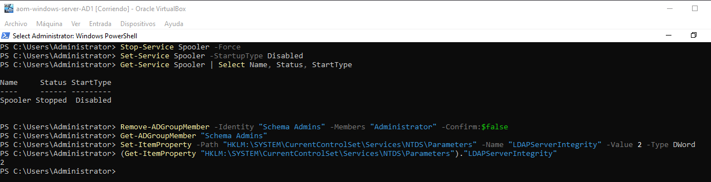
Para comenzar, empezaremos por la "higiene de identidad", es decir, centrarnos en contraseñas y autentificaciones.
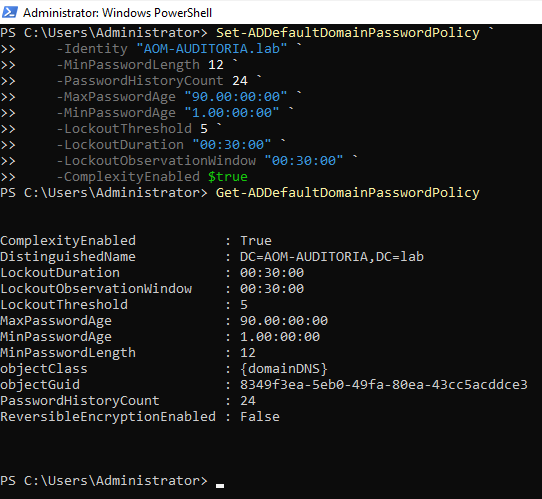
Aquí podemos ver la política de contraseñas reforzada y su comprobación.
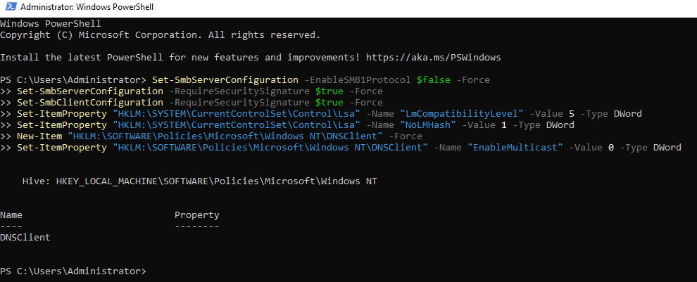
La causa de las 70 críticas de Nessus son, en su mayoría, parches que faltan, por lo que la actualización completa es lo prioritario.
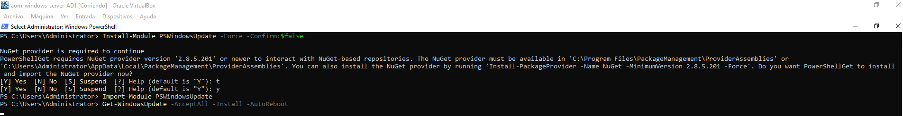
Actualizaremos los servidores (DC01 y DC02).
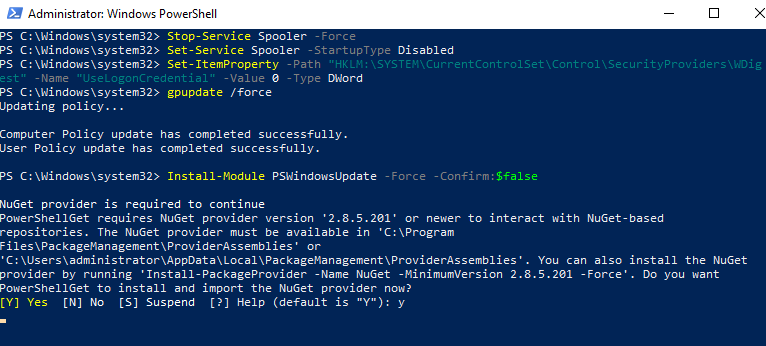
Y también los endpoints, ya que esto es lo que tumba el grueso de las vulnerabilidades críticas y altas.
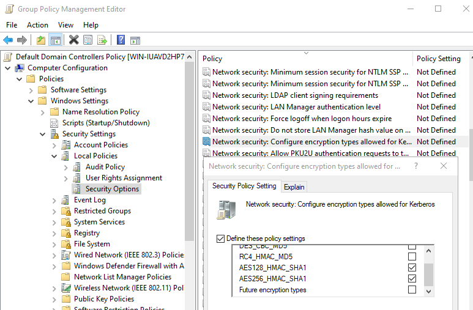
El grueso del bastionado lo aplicaremos mediante GPO, nunca equipo por equipo, auqneu puede hacerse, es recomendable aplicar sobre el dominio, no sore el equipo en si.
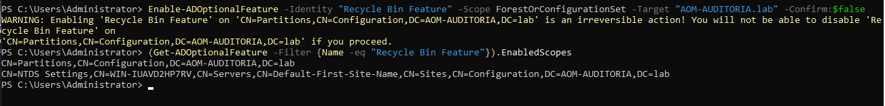
Cada bloque cubre un frente, los protocolos inseguros…
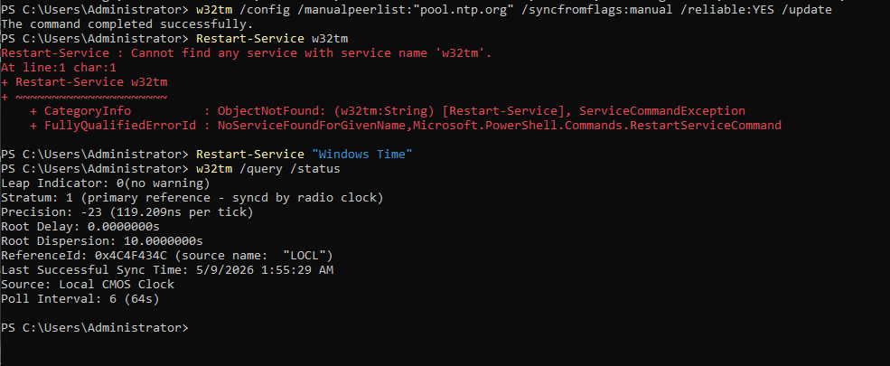
…la auditoría avanzada y las restricciones…
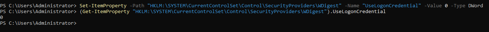
…y todo ello replicado en los dos controladores, DC01 y DC02.
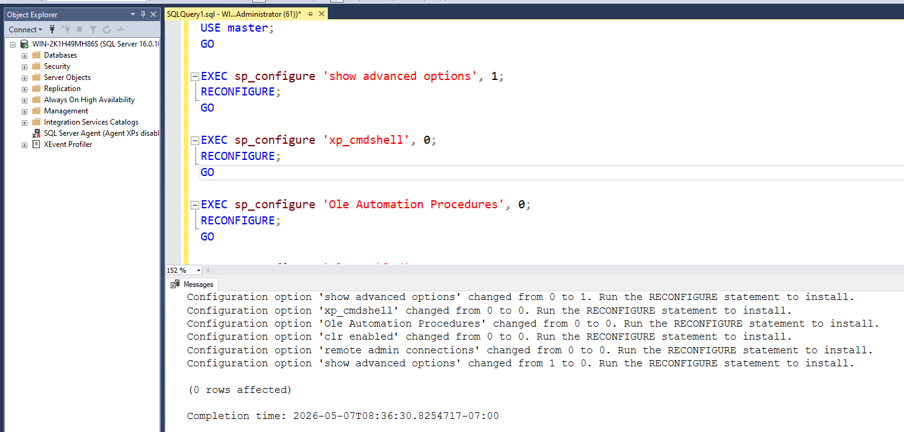
En SQL Server cerraremos los vectores clásicos, es decir, deshabilitaremos xp_cmdshell, OLE Automation y CLR.
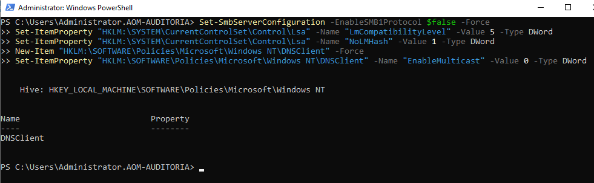
Activaremos la auditoría de SQL, de esta manera el hallazgo H-05 queda cerrado.
10 Estado final — validación
El éxito de una auditoría no reside en el bastionado en si, sino en demostrar la mejora con datos, por lo que volveremos a pasar las mismas herramientas y compararemos los resultados.
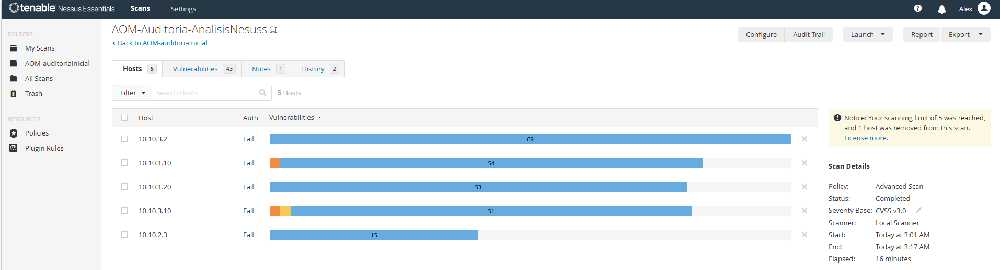
El resultado de Nessus lo dice todo, ya que pasamos de 70 críticas y 194 altas a 0 y 0, quedando unicamente 2 medias y 1 baja como residuales, es decir, la causa raíz se ha eliminado, no se ha ocultado.
| Herramienta | Antes | Después |
|---|---|---|
| Nessus — críticas / altas | 70 / 194 | 0 / 0 |
| PingCastle — score de riesgo | 55 | 30 |
| Purple Knight — por categoría | indicadores en rojo | 98–100% |
| BloodHound — rutas a Domain Admin | caminos presentes | re-ejecutado y revisado |
PingCastle baja de 55 a 30 gracias a la mejora de "higiene de identidad", y Purple Knight lo confirma con un 98 a 100% por categoría. Cabe mencionar que los hallazgos H-06 y H-07 permanecen abiertos y documentados como riesgo aceptado.
11 Anexo de evidencias
Una auditoría se respalda con su evidencia en crudo. Aquí podemos ver los informes completos que han generado las herramientas y la revisión manual, tal cual salieron, ya que en el cuerpo del artículo se muestra unicamente lo esencial y el detalle exhaustivo se encuentra en este apartado.
| Evidencia | Fase | Informe |
|---|---|---|
| PingCastle — informe HTML completo | Estado inicial | pingcastle_inicial.html |
| PingCastle — informe HTML completo | Estado final | pingcastle_final.html |
| Purple Knight — Security Assessment Report | Estado final | purple_knight_final.html |
| gpresult — GPOs aplicadas (DC01) | Revisión manual | gpresult_dc01.html |
| gpresult — GPOs aplicadas (DC02) | Revisión manual | gpresult_dc02.html |
| Nessus — exports JSON (antes/después) | Inicial / Final | evidencias/nessus_inicial.json · nessus_final.json |
12 Conclusión
El valor de este lab no reside en "pasar PingCastle" ni en el número que obtengamos, sino en el ciclo completo, es decir, desplegar con una línea base segura, auditar la configuración y las vulnerabilidades, correlacionar los hallazgos con su impacto bajo DICAT, remediar la causa raíz y, por último, volver a medir.
Como hemos visto, pasar de 70 críticas y 194 altas a cero, con el score de AD a la baja y los hallazgos abiertos documentados con honestidad, es justo lo que distingue una auditoría de un simple escaneo.
"Una auditoría técnica sin marco normativo no es una auditoría, es un escaneo. Y un informe que finge cerrarlo todo no es profesional: lo profesional es cerrar la causa raíz, medir la mejora con datos y documentar con claridad lo que queda abierto y por qué."